1. Create a cylinder - use at least 16 radial sections but only 1 longtitudinal section. Also the cylinder should be open ended on both ends. |
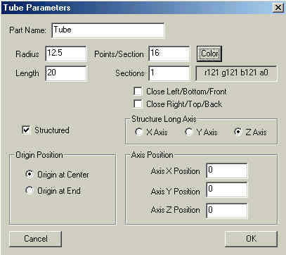 |
2. Next create a box - note the sections |
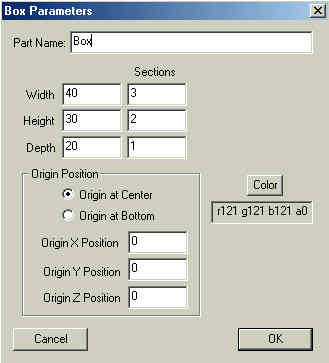 |
3. Align both the box and cylinder to the origin. With the box as the focus, go into Point Edit mode and realign the vertices as shown. It is important to weld the 8 vertices (circled in yellow) where the box intersects the cylinder (select each vertice in turn and then press "v"). |
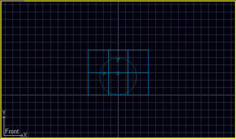 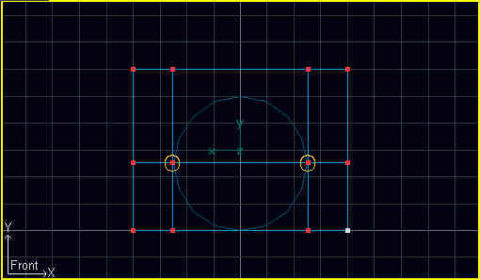 |
4. Once the vertices are welded, join the 2 objects. Now is a good time to set the pivot point for the new object to the origin. |
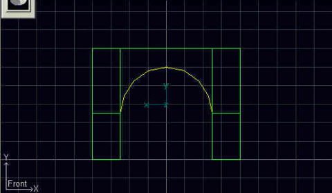 |
5. Switch to Poly Edit mode and delete all the unneeded faces as shown. |
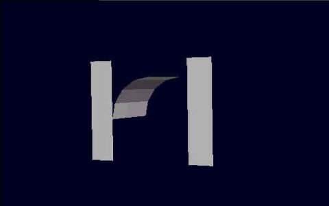 |
6. Change the perspective view to wire frame. Switch over to Point Edit mode. Selecting 3 triangulated points at a time, start to create polys to fill the gaps. |
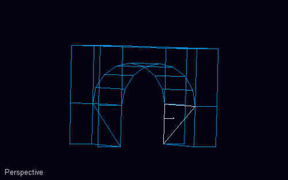 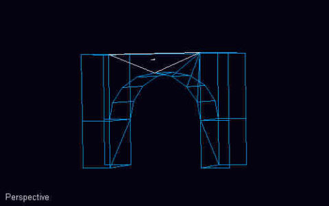 |
7. This is what your arc should look like when you have added all the needed polys. |
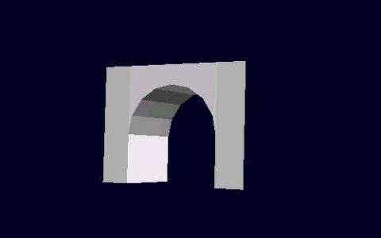 |
8. Smooth the curved sections. The finished arc should be only 60 polys total when exported to MSTS. |
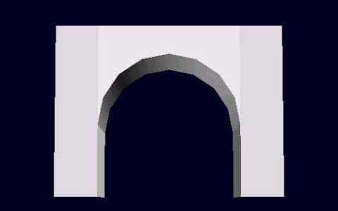 |
9. You can easily form an arch bridge by using multiple copies of the basic arch. Modeling Tips: Texture the first arch module before making additional copies. Also you should "weld" the points where two arches abut to ensure that there is a seamless joint. |
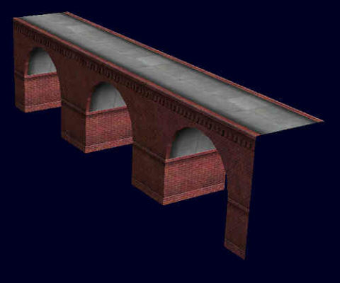 |
Copyrights © 2004-2007, Sean Lim. All Rights Reserved. Hosted courtesy of steam4me with permission.